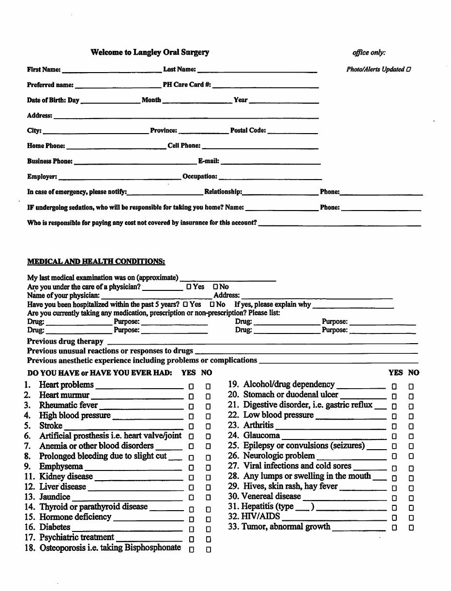
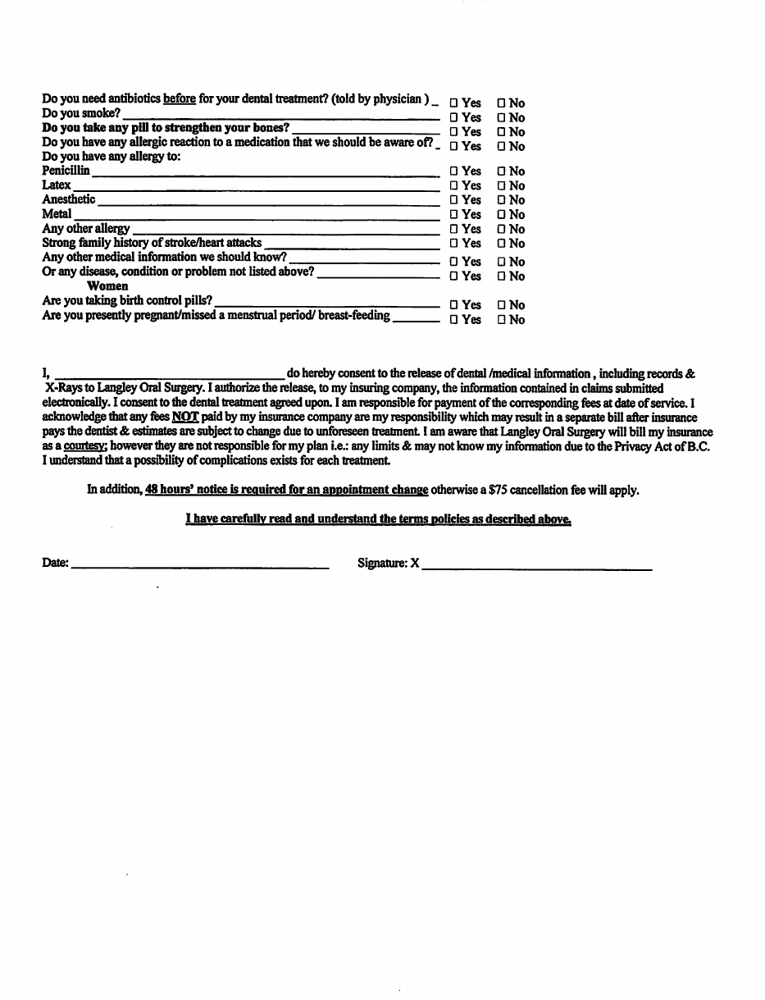

Langley Oral & Maxillofacial Surgery
Please complete this 2-page form before your appointment.
Download the Intake Form (PDF)Privacy: Regular email isn't encrypted. If you'd prefer not to send health information by email, please bring your completed form to your appointment.
Questions? You're welcome to text or call us at 604-371-0578.
110-8661 201 Street, Langley, BC

